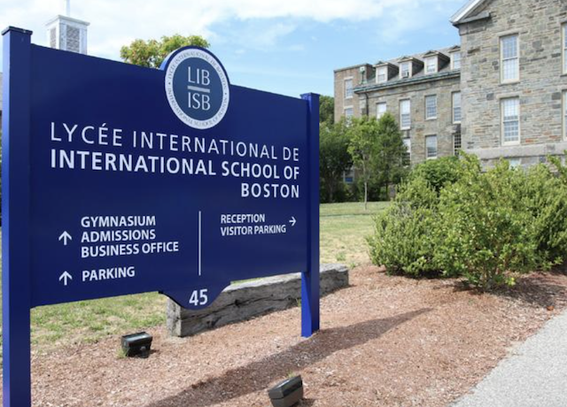
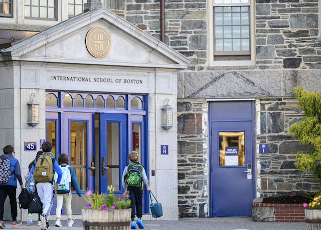

Boston aux jeux de la ZAN
Sommaire :
Boston, une ville unique
Boston est une ville dynamique des États-Unis située dans le Massachusetts qui compte environ 700 000 habitants. Elle est célèbre principalement pour son histoire révolutionnaire et sa prestigieuse éducation. En tant que l'une des plus anciennes villes des États-Unis, Boston a joué un rôle clé dans la révolution américaine, notamment avec des événements marquants comme le Boston Tea Party et la bataille de Bunker Hill. Les rues pavées de la ville, notamment dans des quartiers comme Beacon Hill ou Cambridge, témoignent de son riche patrimoine architectural.

Les universités de Boston jouent un rôle essentiel dans la scène éducative de la ville. Parmi elles, l’Université de Harvard étant reconnue mondialement pour son excellence académique et l’une des universités les plus difficiles à intégrer, MIT (Massachusetts Institute of Technology) qui est reconnu comme l’un des meilleurs établissements au monde pour l’ingénierie et les sciences et L’université de Boston, l’une des plus grandes universités privées des Etats-Unis.

En plus de son histoire et de son éducation, Boston est également un centre culturel dynamique, abritant des musées de renommée mondiale comme l'Institut d'Art Contemporain et le Museum of Fine Arts. La ville est également connue pour sa scène musicale, théâtrale et littéraire, attirant des artistes et des écrivains de partout à travers le monde.
Que visiter à Boston ? Exemples :
| Lieux | Petite description |
|---|---|
| 📍Boston Common | Le plus ancien jardin public de la ville de Boston et même des États-Unis |
| 📍Museum of Fine Arts | Un des plus grands musées des États-Unis |
| 📍Fenway Park | Le plus ancien stade de baseball utilisé en ligue majeure depuis la démolition du Tiger Stadium de Détroit |
| 📍Freedom Trail | Un sentier historique emblématique de 4 kilomètres (2,5 miles) qui relie 16 sites historiques importants de la ville. Il permet aux visiteurs de découvrir les lieux clés liés à la Révolution américaine |
| 📍Boston Tea Party Ships & Museum | Un musée d'histoire sur l'eau avec des jeux d'acteurs en direct, accompagné d'un salon de thé... |
Une équipe venant tout droit de Boston
Cette année, le collège Stanislas accueillera L’IBS (International school of Boston) aussi appelé le LIB (Lycée internationale de Boston) dans les jeux de la ZAN. Il s’agit d’un établissement privé français (présent sur le seuil américain) accueillant des élèves de la Petite Section à la Terminale. Il figure parmi les plus anciennes écoles multilingues des États-Unis.
Le LIB, basé à Cambridge dans le Massachusetts depuis 1962, propose un programme académique de réputation internationale qui place au centre de sa mission le développement d'un cerveau multilingue. Membre de l’AEFE, Le LIB allie les programmes de l’Éducation nationale française (programme du baccalauréat international ou français) et les exigences académiques américaines. Outre le français et l’anglais, d’autres langues comme l’espagnol, le latin ou le mandarin sont proposées. Enfin, l’école fait preuve de multiculturalisme et accueille présentement des élèves de plus de 30 nationalités différentes.
L’école dispose de deux campus modernes : l’un pour les élèves de la maternelle et du primaire et l’autre pour le collège et le lycée, offrant des infrastructures adaptées à un enseignement de qualité. L’établissement offre également des activités extrascolaires variées tels que le théâtre, la photographie, l’art digital, le crochet, la musique, le volleyball, le cheerleading et tout plein d’autres...
Pour plus d'informations, veuillez vous rendre sur le site officiel du LIB